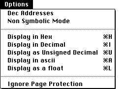

|  |
Hex Addresses / Dec Addresses
Toggles between Decimal and Hexadecimal being used to display addresses.
Symbolic Mode/Non Symbolic Mode
In Symbolic mode labels defined in the assembly language program are displayed in the Program window of MacVAX. In non-symbolic mode numeric addresses are displayed.
Display in Hex, in Decimal, as Unsigned Decimal, in Ascii, as Float
The Display in/as set of commands change the output format of the data in the front most window. These commands apply only to the Memory, Register and Memory by Label windows. In the Memory Dump window
Display in Hex and Display in Decimal will change the format of the displayed data in the Memory Dump window to the corresponding base. Display in Unsigned Decimal and Display in Ascii are disabled.
In the Memory by Label and Register windows
All four display options can be used. To change the format of a value, click and select the value you wish to view, then choose the appropriate Display in/as ... option.
Ignore Page Protection
If this is selected, the virtual memory tables access control fields are ignored. This means a program can write into or read from addresses that may normaly have been inaccessible.
|